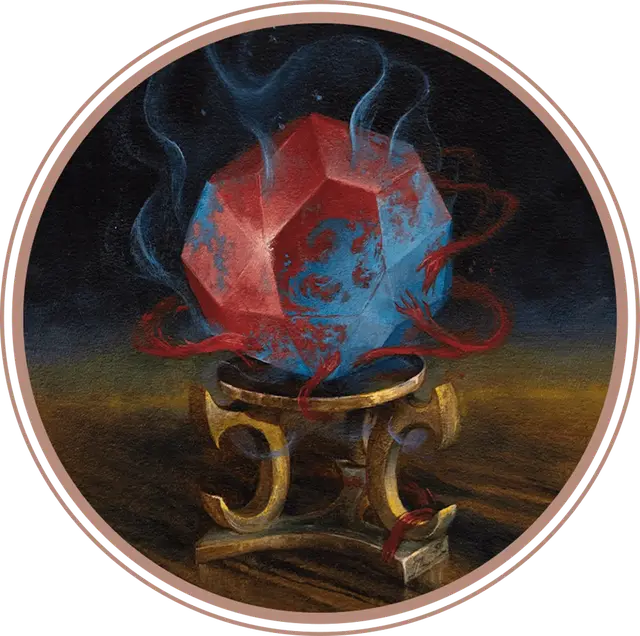

Кристалл Калимемнона
Calimemnon Crystal
Чудесный предмет, артефакт (требуется настройка)

Этот безупречно огранённый шестидесятигранный алмаз помещается в одной руке, но содержит внутри целую империю гениев. Кристалл Калимемнона был создан магией высших эльфов, чтобы заточить печально известных повелителей гениев Калима и Мемнона, некогда правивших и воевавших в землях, ныне известных как Калимшан.
Когда на кристалл смотрит существо с Истинным зрением, прекрасный в глазах других алмаз являет отвратительное зрелище: внутри камня заточено более сотни гениев, включая физические тела Калима и Мемнона. Гении кричат и бьются в мучительном бешенстве, прижимая свои яростные лица к стенам кристаллической темницы.
Свойства кристалла. Пока вы настроены на кристалл, вы получаете следующие свойства:
Магическая фокусировка. Вы можете использовать Кристалл Калимемнона как Магическую фокусировку.
Полёт. Вы обладаете Скоростью полёта 30 футов и можете парить.
Заклинания. Вы можете сотворять с помощью кристалла следующие заклинания (Сл спасброска заклинаний 18): Сотворение или уничтожение воды, Увеличение/уменьшение, Невидимость (нацеленная только на вас) и Образ.
Аура холода. Температура резко падает в 20-футовой Эманации, исходящей от кристалла. Когда эта Эманация входит в пространство существа, а также когда существо входит в Эманацию или заканчивает в ней свой ход, существо получает 2к6 урона Холодом. Существо получает этот урон только один раз за ход. Пока вы настроены на кристалл, аура на вас не действует, и вы можете действием Магия отключать её или включать.
Лучи лечения/урона. Пока вы держите кристалл, вы можете действием Магия выпустить из кристалла шесть лучей нестабильной энергии в одно или несколько существ в пределах 60 футов. Вы можете направить лучи в одну цель или в несколько. Для каждого луча выберите один из следующих эффектов:
Луч урона. Цель совершает спасбросок Ловкости Сл 18, получая 6к6 + 6 урона Излучением при провале или половину этого урона при успехе.
Луч лечения. Цель восстанавливает 2к6 + 2 Хитов.
Это свойство нельзя использовать снова до следующего рассвета.
Случайные свойства. Артефакт обладает следующими случайными свойствами:
1 малое положительное свойство
1 основное положительное свойство
1 малое отрицательное свойство
1 основное отрицательное свойство
Уничтожение Кристалла. Кристалл Калимемнона уничтожается, если существо, настроенное на него, сотворит заклинание Желание и пожелает уничтожения кристалла. Ничто другое не может причинить ему вред. Когда кристалл уничтожен, все гении внутри него освобождаются.